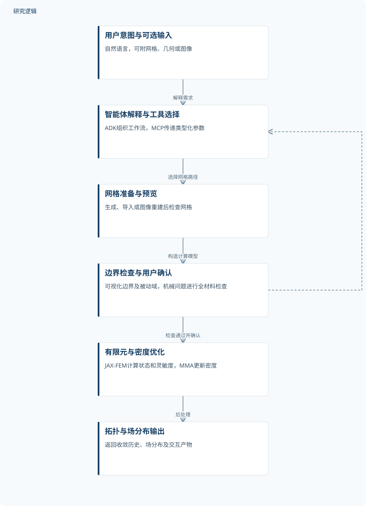
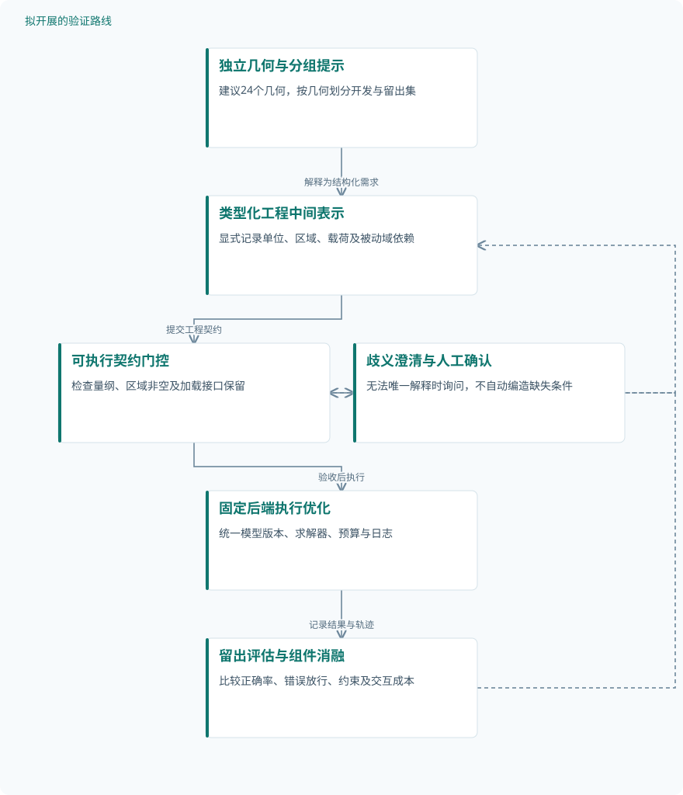

论文精读
TO-Master：面向自动化拓扑优化的大语言模型代理框架
TO-Master: an LLM-agent framework for automated topology optimization
精读更新 2026-10-13 13:18 · 依据论文全文整理
找到候选来源，待核实是否介绍这篇论文。
待核实的候选来源
仅为相关主题的检索线索，尚未确认介绍本论文。
- 大语言模型-能力横评 26-09 月榜
大模型观测员
仅有公开索引线索，论文关联待核实
公众号索引：访问受限，待恢复后重试。
下次重试 2026-10-15 21:09
网页搜索：访问受限，待恢复后重试。
下次重试 2026-10-15 19:50
拓扑优化的难点不只在求解，还在于把“哪里固定、哪里受力、哪些区域不能删除”转成正确的计算模型。TO-Master将大语言模型放在需求解释与工具编排层，让确定性有限元模块承担分析和优化，并在关键节点保留人工确认。论文以11个数值案例展示任务覆盖，以六个常规基准的提示消融检验模糊描述下的建模可靠性。其阅读价值，是区分“优化收敛”与“工程问题建对了”这两种成功。
文章目录
比生成拓扑更靠前的难题：把工程意图建对
成熟的拓扑优化算法仍依赖人工准备几何、网格、边界条件、材料和约束。可微求解器降低灵敏度计算的实现负担，却不能判断“桥梁两端支承”究竟对应哪些节点，或加载界面是否必须保留。错误设置也可能生成外观合理的结构，因此自动建模本身需要独立验证。
TO-Master针对的是从用户描述到求解器输入的接口，而非用语言模型替代力学计算。用户可以提供自然语言及可选网格、几何或图像，系统再组织建模与优化。这里的自动化包含授权、预览和确认，不能理解为完全无人参与的工程设计。
语言模型管编排，有限元与MMA管数值
框架以Google ADK管理智能体，以MCP提供类型化工具接口，JAX-FEM承担有限元分析及伴随灵敏度计算，MMA更新密度变量。结构基线采用SIMP插值E_e=E_min+(E_max−E_min)ρ_e^p，最小化柔顺度J=F^T U；多载荷目标是各工况柔顺度之和。密度滤波、可选Heaviside投影及被动实体域共同决定实际参与分析的密度场。
可靠性检查发生在优化之前：网格先预览，支撑、载荷和被动域再可视化，机械问题还做全材料正向检查。空选择、警告或失败会暂停流程，边界条件经用户确认后才能启动优化。图2体现这一反馈关系；它能拦截部分错误，但正向响应非平凡并不证明工程意图已完整表达。
不同物理工具的材料计量并不完全一致：结构工具约束可设计单元物理密度的算术平均，热工具则按完整域面积或体积加权，并计入被动实体。非等尺寸网格下，两者不能直接视为同一种材料预算。应力工具采用密度加权应力、p_s=12的聚合及迭代缩放，阈值化实体应力仅用于后验评价。
TO-Master：经人工确认的工具编排与数值优化


语言模型解释需求并选择工具；确定性模块执行计算，检查与用户确认位于优化之前。
下载 SVG图示关系说明
实线表示相邻阶段的信息流，虚线表示跨阶段联系或反馈。
用户意图与可选输入 → 智能体解释与工具选择：解释需求；智能体解释与工具选择 → 网格准备与预览：选择网格路径；网格准备与预览 → 边界检查与用户确认：构造计算模型；边界检查与用户确认 → 智能体解释与工具选择：警告或修订反馈；边界检查与用户确认 → 有限元与密度优化：检查通过并确认；有限元与密度优化 → 拓扑与场分布输出：后处理
11个能力案例，六个基准承担重复消融
11个案例覆盖二维与三维悬臂、桥梁、热传导、双载荷塔、应力约束L形与T形梁、两种工程支架和图像重建狗骨形几何。它们均为数值验证，未报告实体试件验证。工程支架使用四面体非结构网格，图像路径经TripoSR重建表面后转为体素化六面体网格；几何来源、网格规模及跨图像重复评估仍不充分。
正式提示消融只使用Cases 1–6：六次完整指令加精确描述的参考运行，以及四种配置、每例五次的120次模糊提示运行。参数相同时复用已有优化结果，因此120次提示运行不等于120次独立数值优化。未报告训练、验证、测试划分、增强数据数量或实际独立优化总数，也没有其他框架的外部对照。
成功判据先检查警告与超时，再由专家判断边界条件、被动域、约束及拓扑合理性。模糊描述下，完整指令成功率为96.7%，移除推理指导、少样本示例和工具规则后分别为83.3%、73.3%和40.0%。该结果支持提示组件在当前配置中的作用，但评审一致性、量化拓扑相似度阈值及统计不确定性未报告。
| 验证任务 | 样本与规模 | 主要结果 |
|---|---|---|
| 六个常规基准的模糊描述提示消融 | 6个基准案例、6次参考运行、120次模糊提示运行；每例每配置重复5次。参数匹配时复用结果，独立优化总数未报告。 | FP、No-CoT、No-FS、No-TC成功率依次为96.7%、83.3%、73.3%、40.0%；FP仅多载荷塔出现一次被动域误解。 |
| L形与T形梁应力约束数值验证 | 2个案例，各优化150步；独立重复运行、实体试件及增强数量未报告，迭代步数不属于独立样本。 | 作者报告最终满足体积与应力约束，曲线末期趋稳；最终精确目标、应力值和约束裕度未报告。 |
| 工程支架与图像重建几何的流程验证 | 3个能力案例；两支架各优化150步，图像案例50步。独立输入图像数量、重复运行及实体试件数未报告。 | 展示工程支架优化结果，并报告图像生成几何成功接入优化、保留指定接口；精确目标和相对改进未报告。 |
展开数据来源、分组、对照与验证边界
六个常规基准的模糊描述提示消融
数据来源。Cases 1–6，包括二维与三维悬臂、桥梁、二维导热和双载荷三维塔；附录给出精确与模糊描述。
分组与工况。FP完整指令；No-CoT移除推理指导；No-FS移除少样本示例；No-TC移除工具规则，均保持相同求解器后端。
数据划分。未报告训练、验证、测试划分；这是固定案例上的提示消融，不能据此视为独立留出集泛化验证。
对照与消融。完整指令加精确描述生成每例参考拓扑；模糊描述下FP作为组件消融对照，外部方法对照未报告。
评价指标。成功率：警告或超时判失败，其余由专家核验建模、约束及拓扑合理性；量化相似度阈值未报告。
验证边界。仅覆盖六个常规案例，部分评价依赖人工与视觉比较；专家人数、评审一致性和统计不确定性未报告。
L形与T形梁应力约束数值验证
数据来源。Cases 7–8为自然语言构造的三维L形、T形梁；展示边界、应力拓扑及目标、应力、体积分数历史。
分组与工况。两例体积分数均为0.3、滤波因子2；加载区保持实体，应力上限分别为1360 Pa和111500 Pa。
数据划分。未报告训练、验证、测试划分；两例属于能力验证，而非六个常规基准的重复提示消融。
对照与消融。未报告无应力约束对照、其他优化方法比较或应力聚合组件消融，不能量化应力处理的相对收益。
评价指标。柔顺度目标、最大密度加权von Mises应力及体积分数历史；另有阈值化实体应力后验评价机制。
验证边界。部分中间迭代体积分数超过0.3；聚合应力与实体最大应力不可等同，缺少两者误差及重复性证据。
工程支架与图像重建几何的流程验证
数据来源。Cases 9–11为喷气发动机支架、飞机轴承支架及图像重建狗骨形几何；工程支架使用四面体非结构网格。
分组与工况。保留安装孔、加载孔或两端接口为被动域；体积分数分别为0.2、0.3、0.6，支撑与面力依几何设置。
数据划分。未报告训练、验证、测试划分及独立几何留出评估，不能将三个展示案例视为泛化测试集。
对照与消融。未报告人工建模流程、其他智能体框架或图像重建方法对照，也未报告几何误差消融。
评价指标。展示最终拓扑与位移幅值；图像案例定性检查支撑和加载接口保留，定量几何与性能误差未报告。
验证边界。输入来源和网格规模未报告；mm与归一化坐标需核验单位体系，人工确认成本及跨几何稳定性尚不明确。
规则约束收益明确，工程可信度仍需补证
移除工具规则造成最大成功率下降，说明接口纪律不仅是提示写法，也是建模可靠性的组成部分。完整配置唯一失败发生在多载荷塔的被动域解释；图10还展示了目标下降但加载表面被删除的失败结构。这直接说明，数值收敛不能替代建模正确性。
作者报告L形与T形梁最终满足体积和应力约束，图8提供迭代历史，但中间迭代并非始终可行。最终精确应力值与约束裕度未报告，聚合约束满足也不能等同于阈值化实体最大应力合格。任意几何和图像案例主要证明流程可连接，尚不足以证明跨任务鲁棒性。
单位一致性尤其需要警惕：正文桥梁设置使用E=70 GPa，图4—5结构标注为70 kPa；二维桥的面力在图示与附录提示中也不一致。工程几何采用mm坐标，而求解器不自动换算单位，这些差异限制物理量复现。具体LLM名称与版本未报告，数据需合理申请获取，因而当前证据更适合支持框架可行性，而非普遍效率或工程精度优势。
从这篇论文走向下一项研究
以下为结合研究方向提出的候选方案，实验设计与预期目标有待验证。
把提示规则升级为可执行的工程建模契约
问题与短板。当前规则主要写在提示中，完整配置仍有被动域错误。建议把意图解释、参数合法和物理可接受分开验收，避免仅凭工具执行成功判定建模正确。
改进机制。建立包含单位、几何区域、载荷方向和被动域依赖的类型化中间表示。优化前检查量纲、区域非空及加载界面保留，无法唯一解释时生成针对性澄清问题。
候选创新。相关文献HASP的摘要提出可执行护栏，CRAFTS摘要采用类型化契约与工程门控。候选创新是将这些已有机制组合成拓扑优化专用物理契约，效果仍待验证。
数据与实验设计。建议设计24个独立参数化几何，利用可公开获得的网格工具生成，并人工编制清晰、空间歧义和单位冲突提示。按几何分为8个开发、16个留出案例，每条件重复5次。
对照与消融。固定LLM版本、求解器和预算，对比完整提示、静态参数校验、契约门控三组。分别移除单位检查、被动域依赖检查和主动澄清，记录提示次数与实际优化次数。
成功判据。建议以留出集完整建模正确率为主指标，同时报告错误放行率、约束违反量、工具次数和人工确认耗时。只有可靠性提高且交互成本可接受，才判定机制有效。
风险与替代方案。过严门控可能误拒合法模型，区域规则也可能随网格改变。应保存拒绝原因和审计轨迹；规则不确定时转为人工确认，以分级警告替代无依据的自动修复。
以非均匀网格和实体应力检验工程可迁移性
问题与短板。结构工具采用单元平均密度，非均匀网格下材料预算可能偏离几何体积；密度加权应力与阈值化实体应力也存在评价差距。建议将两者列为工程迁移的独立检查项。
改进机制。增加可选择的面积或体积加权材料约束，并明确被动域是否计入预算。优化后对多个阈值生成实体模型，用独立细化网格复算应力，再反馈局部保留或重优化。
候选创新。体积加权和实体复核本身不是新技术，候选创新是把材料预算语义与后验应力偏差纳入智能体验收契约。UniACE摘要强调固定执行条件，可借鉴其配置与轨迹记录原则。
数据与实验设计。建议设计12个独立参数化支架，公开生成几何；每例设置均匀、局部细化和尺寸梯度网格，并保留同一物理载荷。先做数值研究，实体试验需另行采集，不能预设仪器可用。
对照与消融。对比单元平均与体积加权约束、仅聚合应力验收与实体复核闭环。消融被动域计量及反馈重优化，固定材料和单位体系，将网格变体视为同一几何的配对条件。
成功判据。建议同时考察真实材料体积偏差、实体最大应力超限率、柔顺度和复算成本。以网格细化后的稳定性及配对误差降低判定成功，不把原优化约束满足率作为唯一指标。
风险与替代方案。尖角应力奇异和阈值断连可能使最大应力不收敛。应增加几何圆角敏感性分析及网格收敛检查；仍不稳定时报告失效边界，避免用平滑后结果掩盖真实超限。
研究建议：工程契约驱动的建模验收闭环


对应第一条路线，拟检验可执行契约是否减少错误放行；图中机制与收益均属于待验证建议。
下载 SVG图示关系说明
实线表示相邻阶段的信息流，虚线表示跨阶段联系或反馈。
独立几何与分组提示 → 类型化工程中间表示：解释为结构化需求；类型化工程中间表示 → 可执行契约门控：提交工程契约；可执行契约门控 → 歧义澄清与人工确认：歧义或风险触发；歧义澄清与人工确认 → 类型化工程中间表示：补充与修订；可执行契约门控 → 固定后端执行优化：验收后执行；固定后端执行优化 → 留出评估与组件消融：记录结果与轨迹；留出评估与组件消融 → 可执行契约门控：开发集修订规则